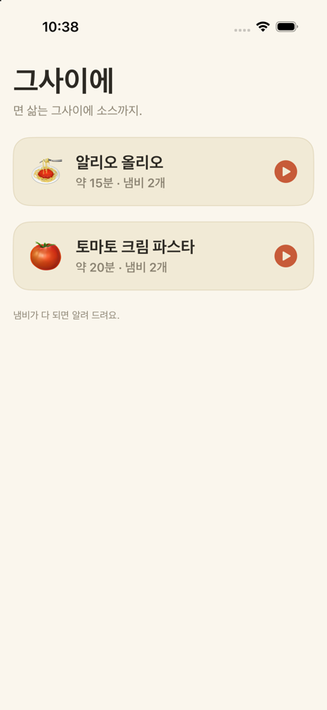
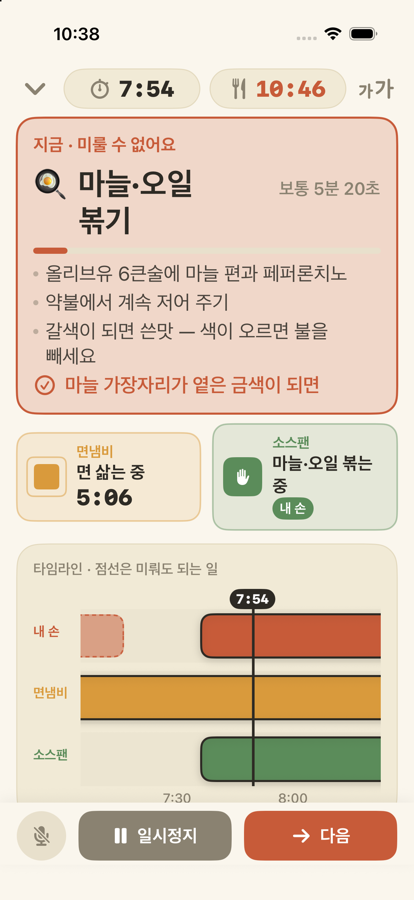

Ενώ βράζουν τα ζυμαρικά, ετοιμάζεται και η σάλτσα.
Το μαγείρεμα είναι δύσκολο όχι επειδή τα χέρια σας είναι αργά, αλλά επειδή ο χρόνος των δύο κατσαρολών κυλά διαφορετικά. Τα ζυμαρικά δεν σας περιμένουν, ενώ το κόψιμο του σκόρδου γίνεται όποτε θέλετε. Το Geusaie («στο μεταξύ» στα κορεατικά) ξεχωρίζει τα δύο και δείχνει με μεγάλα γράμματα μόνο τη μία εργασία που πρέπει να κάνουν τα χέρια σας τώρα.
Το βγάλσιμο των ζυμαρικών, το σκόρδο λίγο πριν καεί. Όταν έρθει η ώρα, η οθόνη κοκκινίζει και σας λέει να αφήσετε ό,τι κάνετε.
Κόψιμο, τρίψιμο, ζύγισμα. Προχωρούν μόνο όσο τα χέρια σας είναι ελεύθερα, σταματούν όταν σας καλεί μια κατσαρόλα και συνεχίζουν από εκεί που έμειναν.
Η κατσαρόλα των ζυμαρικών και το τηγάνι της σάλτσας δείχνουν η καθεμιά τι κάνει και πόσος χρόνος απομένει.
Όταν έχετε βρεγμένα χέρια, πείτε «다음» (στα κορεατικά «επόμενο»). Η αναγνώριση ομιλίας καταλαβαίνει προς το παρόν μόνο κορεατικά και, όπου είναι δυνατόν, γίνεται στη συσκευή.
Στηρίξτε τη συσκευή στον πάγκο και κάντε ένα-δύο βήματα πίσω. Το κείμενο μεγαλώνει σε τέσσερα επίπεδα μέσα στην εφαρμογή.
Οι εργασίες των χεριών σας δεν έχουν αντίστροφη μέτρηση. Η γραμμή γεμίζει, σταματά και περιμένει.


| Πράσινο | Προετοιμασία. Με την ησυχία σας. |
|---|---|
| Τερακότα | Αν το αναβάλετε, τα ζυμαρικά θα παραβράσουν ή θα καούν. Κάντε το τώρα. |
| Πλαίσια κατσαρολών | Όσο μικραίνει το τετράγωνο, τόσος είναι ο χρόνος που απομένει. Η κατσαρόλα είναι ένα ρολόι που πρέπει να προσέχετε, γι' αυτό εδώ ο χρόνος δεν κρύβεται ποτέ. |
| Aglio e olio | Περίπου 15 λεπτά · 2 κατσαρόλες · Πηγές: Serious Eats, Gimme Some Oven |
|---|---|
| Ζυμαρικά με κρέμα ντομάτας | Περίπου 20 λεπτά · 2 κατσαρόλες · Πηγές: RecipeTin Eats, The Burnt Butter Table |
Κολλήσατε κάπου, είδατε κάτι περίεργο ή θέλετε να προσθέσουμε μια συνταγή; Είστε όλοι ευπρόσδεκτοι. Στείλτε email στο leeo@kakao.com ή χρησιμοποιήστε Ρυθμίσεις ▸ Αποστολή σχολίων στην εφαρμογή. Οι συχνές ερωτήσεις βρίσκονται στη σελίδα υποστήριξης.